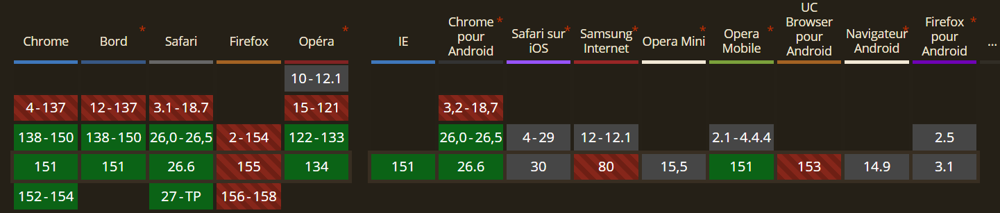

Explication
La fonction progress() est une nouvelle fonction
mathématique en CSS. Elle évalue la position d'une valeur entre un point
de départ et un point de fin, et renvoie une valeur proportionnelle
comprise entre 0 et 1. C'est l'outil parfait pour créer des composants
dont le design (taille, opacité, position) s'adapte dynamiquement et
fluidement en fonction de la taille de l'écran ou de leur conteneur,
sans utiliser d'immenses formules calc() complexes ou de
JavaScript.
Démo Live
Redimensionnez cette boîte en tirant sur son bord droit. La barre bleue se remplit automatiquement en fonction de la largeur de la boîte (de 250px à 600px).
Code CSS
.progress-resize-box {
container-type: inline-size;
resize: horizontal;
overflow: hidden;
width: 300px;
}
.progress-fill {
width: calc(progress(100cqw, 250px, 600px) * 100%);
}Compatibilité et Fallback

Fallback : Sur les navigateurs ne supportant pas cette
fonction, la propriété contenant progress() sera ignorée.
La solution de repli consiste à déclarer une valeur fixe juste avant la
propriété dynamique (par exemple width: 50%;) pour assurer
un affichage par défaut convenable.